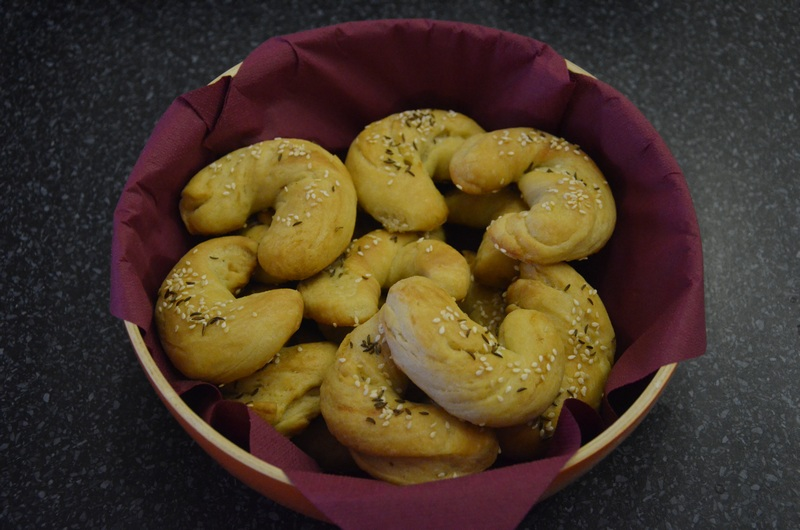

Nápadité a super zdravé pokrmy z magazínů pro ženy jsou sice bezva inspirace, ale někdy není nad to, založit si do svého osobní kuchařky taky nějaký osvědčený rodinný recept. Tento jsem si odnesla z jedné rodinné návštěvy v Otrokovicích - naškrábaný na malém trhacím papírku, tak, jak se na tyto typy receptů sluší a patří :-). Nedávno se mi podařilo objevit papírek při úklidu v šuplíku a rozhodla jsem se, že se tedy u nás bude zase po delší době péct. A jak to dopadlo?
- 1 láhev perlivé Mattoni
- olej
- 25dkg hladké mouky
- 25dkg polohrubé mouky
- droždí
- sůl
- cukr
- 1 vejce
- sůl, kmín či sezam na posypání
Pokud vaše kuchyň také nedisponuje kuchyňskými váhami, zvolíme si jednoduchou odměrku - hrnek na kafe a hořčičák (to se ve většině domácností obvykle běžně vyskytuje :-)). Smícháme 3/4 hořčíčáku Mattoni (měla by mít pokojovou teplotu) a 1 hořčičák oleje. K tomu přidáme 25dkg hladké mouky (jsou to necelé 2 hrníčky kávového hrnku) a 25dkg polohrubé mouky (1 a čtvrt kávového hrnku). Ingredience smícháme, uděláme důlek a do něj rozdrobíme 3/4 kostky droždí. Přidáme ještě jednu kávovou lžičku cukru a jednu kávovou lžičku soli. A taky jedno vejce. No a pak už jen promícháme a necháme kynout. Zhruba po hodince přemísíme a necháme ještě půl hodinky odpočinout. Poté těsto přendáme na vál a rozdělíme si ho na cca 16 bochánků. Plech vysteleme pečícím papírem a pokládáme na něj bochánky, ze kterých tvarujeme rohlíčky. Na to ještě budu muset vymyslet nějaký grif. Osvědčilo se mi rozválet bochánek do tvaru “žížalky” :D a pak ho zakroutit do rohlíčku. Teta mi to doporučovala motat určitě nějak jinak, ale už jsem to zapomněla :(. Nakonec každý rohlíček potřeme studenou vodou a posolíme, pokmínujeme či zasypeme sezamem. A pečeme na 200°C zhruba půl hodinky.

Tramtadadaaaa
Rohlíčky se povedly, ale musím dál trénovat, aby příště byly ještě lepší :-). Pečete taky? A máte sbírku rodinných receptů roztroušenou na papírcích :D??